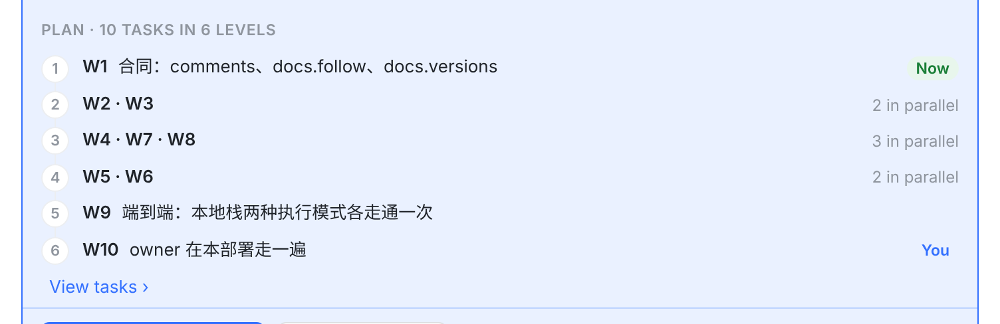
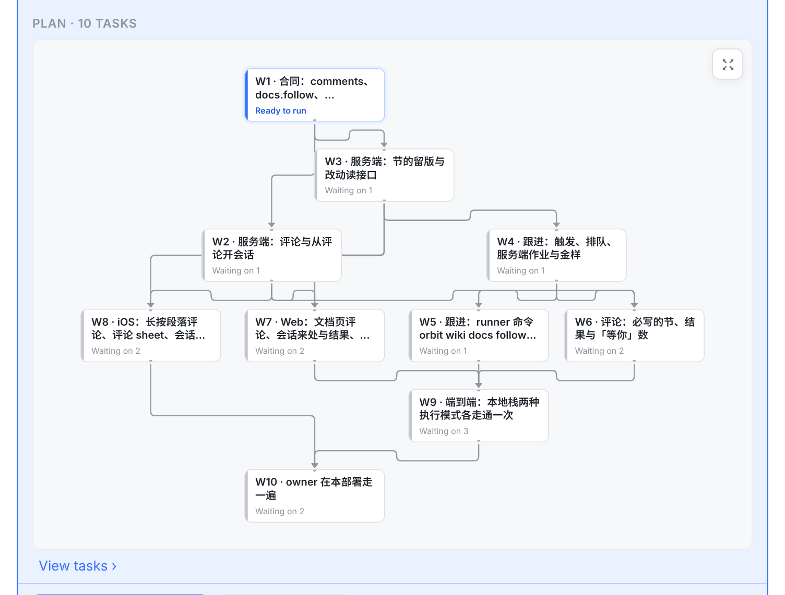
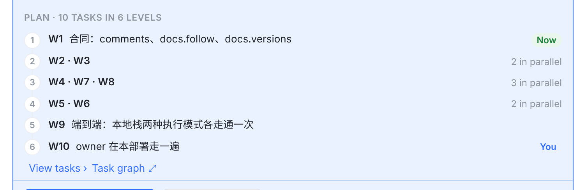
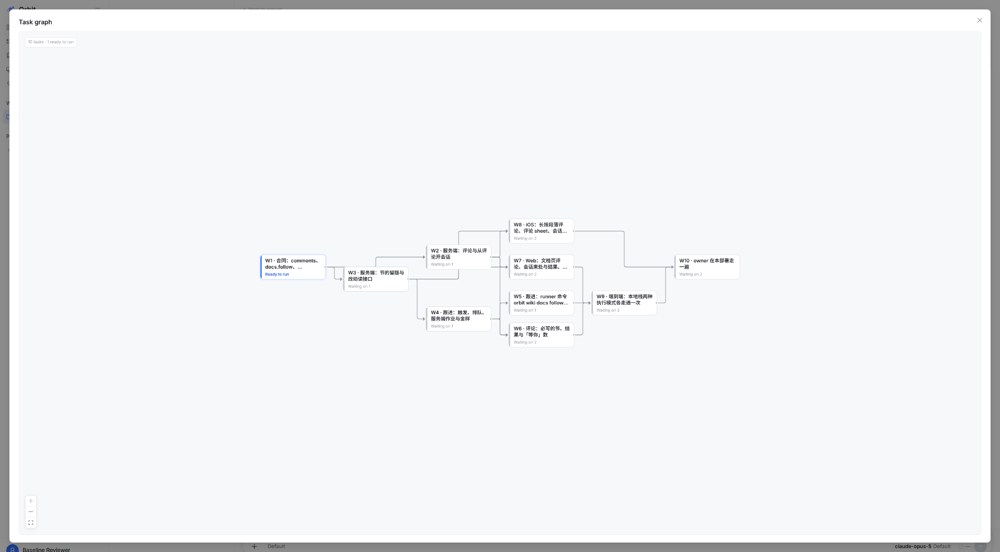
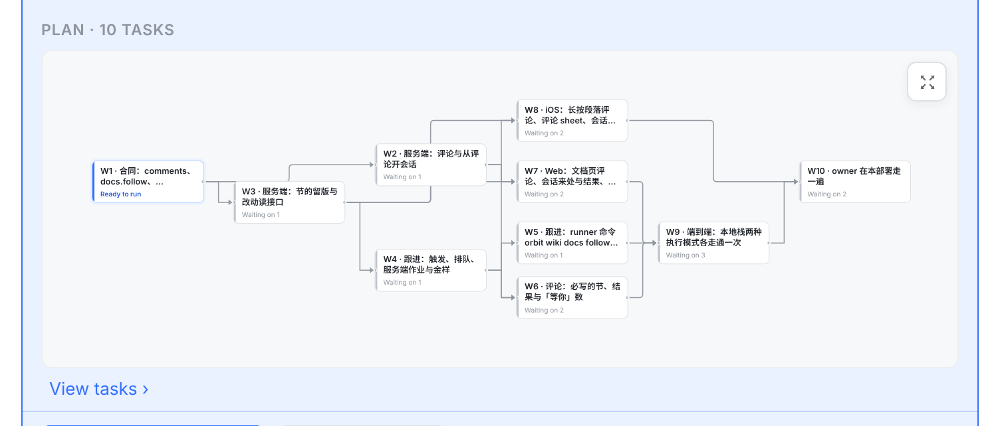
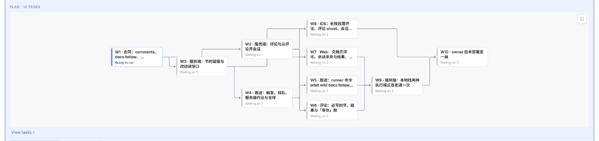

你问 Plan 能不能展示项目页的任务图。可以：卡片已经读了同一份 GET /projects/:id/dependency-graph，项目页的任务图组件（ProjectDependencyGraph）可以直接放进来，不多一次请求。难点在宽度：项目页从左往右画，这个项目放进 720 的卡里只能缩到 0.5 倍；从上往下画（项目页在手机上就是这样画的）能放下，0.8 倍。
下面都是真实截图：01 板改后的那份代码（卡片最宽 720，More / Read all 修好），再把项目页的任务图放进 Plan 跑出来的，数据照抄这个项目（10 个任务、15 条依赖）。图就是项目页那一个，排法也一样，只给卡片加了三个可选参数：方向、嵌在卡里（不吃滚轮、不拖、总是整张缩放）、只开全屏。

按层列出编号，一层只有一个任务时才写标题。看得出先后，看不出谁等谁：W2 · W3 是什么、W9 等哪几个，都要点 View tasks 才知道。

10 个任务都在，0.8 倍，标题读得出；谁等谁一眼能看到（W2、W3 都等 W1；W9 等 W5、W6、W7）。W1 写 Ready to run，其余写 Waiting on N。右上角 ⤢ 打开全屏。在卡里它只是一张图：滚轮照常滚对话，不会被它吃掉，也不能拖。卡片比列表高 327 px（1,320 → 1,647）。

卡片和现在一样高。点 Task graph 打开右边这个全屏图：就是项目页的全屏任务图，1:1，能拖能缩放。iOS 的项目页也是从一行点开任务图（一个 sheet）。


6 层横着排要约 1,260 px，720 的卡里只能缩到 0.5 倍，字太小。
图是项目页的排法（dagre），它会为了少绕线把任务往下挪：② 里 W2 排在 W3 下面一行，W7、W8 和 W5、W6 排在同一行，而列表按「最晚的前置 + 1」把 W2、W3 放第 2 层、W7、W8 放第 3 层。所以画图时节标题去掉 in 6 levels，只写 Plan · 10 tasks，免得数行数对不上。

图本身最好看，但 01 板说的问题都还在：设置项的开关离名字约 1,760 px，标准一行一百多字。
| 情况 | 现在 | 改后 |
|---|---|---|
| 整张图在卡里能放到 0.7 倍以上（项目页自己判断「放得下」用的同一条线） | 分层列表 | 任务图，从上往下，整张缩放（②） |
| 放不下：任务多、层多；手机网页的审阅弹窗；服务端把图折叠或截断了 | 分层列表 | 保留分层列表，加 Task graph ⤢（③） |
| 卡片宽度（01 板待定 1） | — | 640 宽 0.72 倍；720 宽 0.8 倍；880 宽 0.97 倍 |
| 滚轮、拖动 | — | 滚轮滚对话；图不拖、不缩放；要放大点右上角 ⤢ |
| 点一个任务 | — | 和项目页一样打开那个任务（转到项目页上的任务面板，Back 回到会话） |
| Now / You | 列表上有 | 图上 W1 写 Ready to run；W10 不单独标 You，Comes to you 里已经写了 |
| 节标题 | Plan · 10 tasks in 6 levels | Plan · 10 tasks（见 ④ 右边） |
| View tasks ›、Start 和底栏那行字、项目页的任务图 | — | 不变 |
src/web/src/components/ProjectDependencyGraph.tsx：加三个可选参数：方向（从上往下 / 从左往右）、嵌在卡里（不吃滚轮、不拖、总是整张缩放、不显示左上角的计数）、只开全屏（给 Task graph ⤢ 用）。项目页不传这些参数，行为不变。约 40 行。src/web/src/components/StartProjectCard.tsx：Plan 一节先算整张缩放的倍数，0.7 以上画图，否则列表 + Task graph ⤢。图走项目页同一个按需加载的入口，数据用卡片已经读过的那份。src/web/src/lib/projectStart.ts：新文案 Task graph，OrbitKit 的文案对照测试跟着加一条。StartProjectCard.test.tsx（什么时候画图、什么时候是列表）、ProjectDependencyGraph.test.tsx（嵌入时不吃滚轮、只开全屏）；版面用真浏览器截图核对。